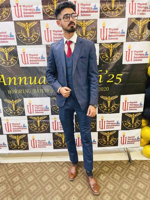

About Me
I am a motivated and empathetic Physical Therapist based in Karachi, Pakistan. With clinical experience in musculoskeletal, pulmonary, and geriatric rehabilitation, I am passionate about helping people heal and regain independence. I also enjoy teaching and empowering students in the sciences.
Services
- Musculoskeletal & Pulmonary Rehabilitation
- Geriatric Rehabilitation
- Patient Counseling & Health Promotion
- Biology & Chemistry Tutoring (SSC & FSC levels)
- Clinical Evaluation & Coaching
Clinical & Teaching Experience
Clinical Internships
- Abbasi Shaheed Hospital
- Dr. ESSA Laboratory
- Saifee Hospital
- NICH
- Shamsi Hospital
- Alkhidmat Hospital (May 2025)
Teaching
2 years of experience at Reads Coaching Centre, teaching Chemistry and Biology with personalized plans to boost academic performance.
Certifications
- Orthoflex: Disease-based Physiotherapy
- Fall Prevention - DUHS
- Heart Rate Variability - DUHS
- Sports Injuries - Elite Rehab Clinic
- Basic Resuscitation - JPMC
- Red Flags in Back Pain - Elite Rehab Clinic
- Blood Donation - Fatimid Foundation
Contact Me
Email: muham.huzaifa89@gmail.com
Phone: +92 325 9282956
LinkedIn: Visit My LinkedIn